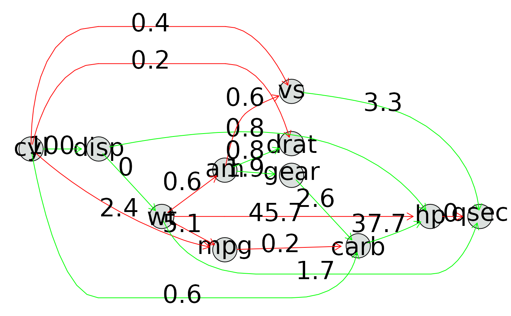
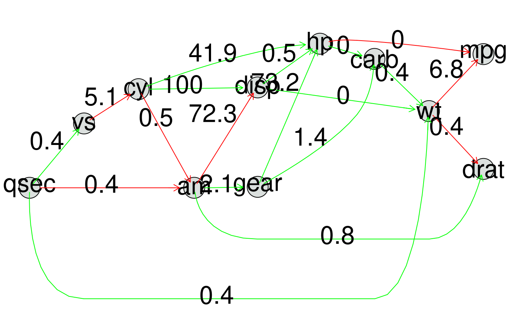

R/variablerelationships.R
evolve_hierarchy_and_plot.RdThis method starts by evolving a graph relationship between all variables and afterwards fits that graph to your dataset. It can operate with whitelists and blacklists to enforce and forbid relationships respectively. The scores in the plot are standardized between 0 and 100. The sign of the strength is highlighted by color.
evolve_hierarchy_and_plot( data, blacklist = NULL, whitelist = NULL, signcolor = TRUE, ... )
| data | the dataset to discover the relationship on. Should be given as a data.frame or tibble. |
|---|---|
| blacklist | the relationships to forbid in the graph. This defaults to NULL which means we forbid nothing. |
| whitelist | the relationships to enforce in the graph. This defaults to NULL which means we enforce nothing. |
| signcolor | a boolean for whether you want the sign to be colored in the Plot |
| ... | arguments passed to the hillclimbing algorithm in bnlearn. |
a Ragraph S4 object
#>#>#>#> #>#> #> #> #> #>#> #> #>#> #> #>#> #> #>#> #> #> #> #> #> #> #>#>library(bnlearn)#> #>#> #> #>#> #> #>evolve_hierarchy_and_plot(mtcars)blacklist <- data.frame(from = c("cyl", "cyl", "cyl"), to = c("drat", "vs", "mpg")) evolve_hierarchy_and_plot(mtcars, blacklist = blacklist)